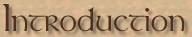
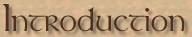

Hail and Well Met! Welcome to the ImaNewbie does Britannia, Collector's Edition.
Just by way of a little history, ImaNewbie was not my first foray into the world of online comics. It all started with the first multiplayer online game to gain a large following, (i.e. Diablo), and a site I created called Tryon's Diablo Cartoon Page (possibly one of the very first web comic sites dedicated to a multiplayer online game}. I had been creating little weekly one frame cartoons about Diablo for a little over a year. Then one day I heard of this new Massively Multiplayer Online Game called Ultima Online that was sweeping the net. At first I was skeptical, I mean sheesh, PAYING a monthly fee to play a computer game? Surely this would never catch on. But then, as more and more of my old Diablo friends went over to UO and began sending glowing reports, I decided to take the plunge. The rest is history.
I never would have guessed when I sat down at the computer and created that first little two frame comic, that over four years later I would still be chronicling the adventures of ImaNewbie. In that time ImaNewbie became somewhat of a legendary character in Ultima Online, probably nearly as well known as Lord British himself. Over the last eighteen years, thousands upon thousands of people (from over 95 countries that I have managed to identify), stopped in at my web site to spend some time with Ima and his crew. This updated and added to anthology is my way of saying thanks to all the loyal fans who stayed with Ima through thick and thin, followed his adventures, emailed me with suggestions and compliments, spoke with me in-game, and generally gave me the encouragement and drive to continue the series. I think the cartoon series stands as a historical record of the early days of Ultima Online, covering issues like PKing, server reverts, housing, black dye tubs, scamming, player rewards, selling on Ebay, the arrival of Trammel, care bears and numerous others. Enough of the reminiscing, lastly, I would just like to thank the New Stratics owners and staff for once again giving ImaNewbie a place to call home.
In addition to the 'toons, I have also included character bios of all the major characters who have appeared in the comics along with significant events in their lives. I have added notes and indexes on the major themes and controversies and where they appear in the various toons. I have also included the entire 19 editions of the Britannia Enquirer. The Britannia Enquirer was an extra feature I launched when I discovered that there were some issues happening in-game that I thought would be better handled using the "tabloid" newspaper format rather than the standard 'toons. And lastly, I have included the Dictionary of UO/ICQ speak from my web site ... a quick guide to some of the strange and colorful language and abbreviations that have become a trademark of online communications, especially in online gaming. And for an added bonus I have also included a bunch of the very best Diablo toons and other comic items from Tryon's Diablo Cartoon Page, the site that got me doing the toons in the first place.
So here without further ado, I humbly present the life and times of ImaNewbie…Enjoy!
later…Tryon